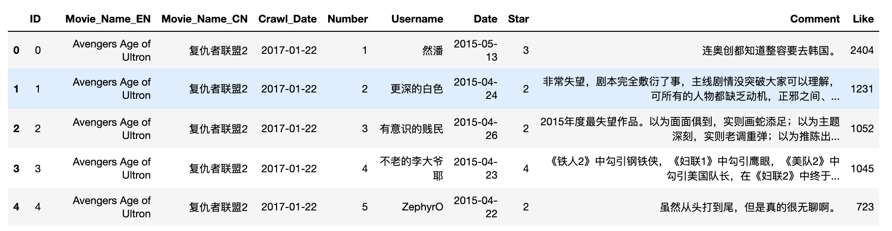

本文要点
- 读取csv
- cntext训练词向量模型
- cntext扩展pos、neg词典
- 导入词向量模型
- 运用词向量模型
代码下载
链接: https://pan.baidu.com/s/1BFUb7myg6svTUZJfnvZfAg 提取码: og9t
一、读取数据
import pandas as pd
df = pd.read_csv('douban.csv')
df.head()

print("电影 : {} 部".format(df.Movie_Name_CN.nunique()))
print("评论 : {} 条".format(len(df)))
电影 : 28 部
评论 : 2125056 条
二、训练模型
使用cntext库训练词向量word2vec模型,这里我把csv数据整理为txt
from cntext import W2VModels
import os
#训练word2vec模型
model = W2VModels(cwd=os.getcwd()) #语料数据
model.train(input_txt_file='douban.txt')
Step 1/4:...预处理 语料 ...
Step 2/4:...训练 word2vec模型
耗时 2001 s
cntext可以用于扩展词典
model.find(seedword_txt_file='pos.txt',
topn=100)
model.find(seedword_txt_file='neg.txt',
topn=100)
Step 3/4:...准备 每个seed在word2vec模型中的相似候选词...
Step 4/4 完成! 耗时 2302 s
Step 3/4:...准备 每个seed在word2vec模型中的相似候选词...
Step 4/4 完成! 耗时 2303 s
在代码所在文件夹内可以找到
- output/w2v_candi_words/w2v.model
- 新的 pos.txt
- 新的 neg.txt
新的pos.txt是对pos.txt词典的扩展。
三、导入w2v模型
有的时候数据量特别大，模型训练十分不易。
这时，保存已训练好的模型，不止下次不用再同样的数据再次训练，也可分享给其他人使用。
训练结束后，在代码所在文件夹内可以找到 output/w2v_candi_words/w2v.model
from gensim.models import KeyedVectors
w2v_model = KeyedVectors.load('output/w2v_candi_words/w2v.model')
w2v_model
<gensim.models.keyedvectors.KeyedVectors at 0x7face0574880>
w2v_models数据类型为KeyedVectors， 在本文中使用w2v_models代指KeyedVectors
四、玩转词向量
用户级的数据(如在线评论)感觉生成的向量会准一些，词向量的方向，近义反义在向量中都有体现。

例如本文使用的是28部电影的2125056条影评， 一般评论内容包含电影相关信息，如电影题材、是否值的观影等。
而在我们训练出模型w2v_models存在一些常用的方法
- w2v_model.get_vector(key) 获取key的词向量
- w2v_model.most_similar_to_given(key1, keys_list) 从 keys_list 中获取与 key1 最相似的词
- w2v_model.n_similarity(ws1, ws2) 两组词ws1, ws2 的相似度
- w2v_model.closer_than(key1, key2) 更接近于key1的词向量(相比于key2)
- w2v_model.most_similar(positive, negative) 找出与positive同方向，与negative反向相反的词。
4.1 get_vector(key)
w2v_model.get_vector(key) 获取key的词向量
#获取某词语的向量
w2v_model.get_vector('给力')
array([ 0.06488553, 0.74188954, 0.25468495, 0.89755714, 1.8139195 ,
-0.6950082 , 0.24339403, -1.2188634 , 0.543618 , -0.9988698 ,
0.27471313, 0.9325699 , -0.5860608 , -0.5081917 , 1.6423215 ,
-0.0490295 , -0.3927043 , 0.659067 , 0.03185922, -1.021391 ,
-1.3214804 , -0.28208104, -0.7819419 , -0.30637202, -1.5944146 ,
-0.12383854, -0.70463836, 0.45689437, 1.223081 , -1.9453759 ,
-0.5538997 , -0.9750523 , -0.10031194, -0.9568689 , 0.30341247,
1.1102395 , 0.667315 , -1.1600997 , -0.26674765, -0.55144155,
-0.3246094 , 0.82902473, -0.47339582, -0.9009957 , 1.7722464 ,
0.28959563, -0.03453476, 0.4786787 , -0.48074463, -0.23090109,
-0.49390873, 0.71246386, 2.1557336 , 2.4899387 , -0.51481706,
0.5579966 , -0.6973235 , -1.1408254 , 0.72495663, -1.0326954 ,
-0.5455598 , 0.98941576, -1.2155218 , -0.9088408 , 1.9184568 ,
-0.21800426, -1.2009395 , 0.29684314, 1.3672423 , -2.269391 ,
0.6188098 , -0.02714545, -0.44811317, 1.4397241 , -1.0594722 ,
-0.08088647, -0.13015983, -0.99255013, 0.62044877, 2.5046496 ,
0.4054545 , -0.38767585, -0.6956541 , 0.22991426, 0.5928579 ,
-0.12684819, -0.17408212, 0.25033692, -1.4419957 , -0.27390227,
1.166638 , -0.00624323, -1.6046506 , 2.1633575 , -0.395548 ,
-1.1297956 , -3.1474566 , 0.38729438, -2.0434535 , -1.5511289 ],
dtype=float32)
4.2 most_similar_to_given(key1, keys_list)
从 keys_list 中获取与 key1 最相似的词。例如在212w影评中，从'爱情', '悬疑', '飞船', '历史', '战争'找出最接近'太空'，最后返回'飞船'
#从 `keys_list` 中获取与 `key1` 最相似的 `key`。
w2v_model.most_similar_to_given(key1='太空',
keys_list=['爱情', '悬疑', '飞船', '历史', '战争'])
'飞船'
4.3 w2v_model.n_similarity(ws1, ws2)
两组词ws1, ws2 的相似度。
from sklearn.metrics.pairwise import cosine_similarity
cosine_similarity([w2v_model.get_vector('理想')],
[w2v_model.get_vector('现实')])[0][0]
0.5371934
#cosine算法
w2v_model.n_similarity(['理想'],
['现实'])
0.5371934
#计算两组键之间的余弦相似度。
w2v_model.n_similarity(['给力', '精彩', '赞', '推荐'],
['无聊', '尴尬', '垃圾'])
0.35008422
w2v_model.n_similarity(['理想', '梦想'],
['现实', '生活'])
0.48020104
4.4 w2v_model.closer_than(key1, key2)
更接近于key1的词向量(相比于key2)
#获取所有更接近 `key1` 的键，而不是 `key2` 。
w2v_model.closer_than(key1='理想',
key2='现实')
['梦想', '妥协', '追梦', '愿望', '骨感']
4.5 w2v_model.most_similar(positive, negative)
找出与positive同方向，与negative反向相反的词。
w2v_model.most_similar(positive=['给力', '精彩', '过瘾'],
negative=['垃圾'],
topn=10)
[('激动人心', 0.6859163045883179),
('惊心动魄', 0.6767394542694092),
('带感', 0.6723690032958984),
('惊险刺激', 0.667783796787262),
('刺激', 0.6445038318634033),
('燃', 0.6429688930511475),
('爽快', 0.6287934184074402),
('带劲', 0.6254130005836487),
('爽', 0.624543309211731),
('酣畅淋漓', 0.6140543818473816)]
4.6 类比king-man+woman~queen

每个词是高维向量空间中的一个点， 两个点可以组成有方向的向量，而向量可以比较方向。
这里是推理过程，受限于数据，公式不一定完全成立， 但是思维可以类比。
这两个词相减，按感觉应该得到的是性别方向，雄性->雌性。
gender_direction_1 = vector(man)-vector(woman)
gender_direction_2 = vector(king)-vector(queen)
那两个性别方向应该近似，假设这里将其gender_direction_1=gender_direction_2，则对于公式中任意一个词，都可以由等式中的其他三个词经过运算得到。例如
vector(queen) = vector(king)-vector(man)+vector(woman)
这里构造了一个情绪的公式，计算如下
# 开心 - 难过 ~= 享受 - d
a = w2v_model.get_vector('开心')
b = w2v_model.get_vector('难过')
c = w2v_model.get_vector('享受')
#d = a-b+c
w2v_model.similar_by_vector(a-b+c)
[('享受', 0.7833479046821594),
('开心', 0.6825607419013977),
('愉快', 0.6298696994781494),
('娱乐', 0.6215130090713501),
('感官', 0.6085000038146973),
('图个', 0.6052624583244324),
('图一乐', 0.6039161682128906),
('休闲', 0.60273677110672),
('视觉享受', 0.6006160378456116),
('轻松愉快', 0.5961319804191589)]
很遗憾，d没有运算出煎熬之类的词语，但好在都是形容词，而且是快乐居多的形容词，类别是对的，就是方向是反的。
词向量总结
需要注意的是经典的运算king-man+woman~queen来自glove模型，而不是本文使用的word2vec模型。两者相同点，glove与word2vec均为词嵌入embeddings技术。区别在于glove获取的词的全局语义空间，而word2vec一般是某个词前后n个词(例如前后5个词)范围内的语义。做概念四则运算，以后如可能，建议用glove。
此外，即时使用glove，尽量使用概念的词组均值向量。首先要训练数据要存在这些人类认知的线索。其次，认知概念往往不是由一个词决定的，可能需要相关的很多词。例如人类社会中的雄雌(没有贬义，包含了男女在内的概念)，
- 雄性概念词有
他、男人、男孩、父亲、爷爷、爸爸、姥爷... - 雌性概念词有
她、女人、女孩、母亲、奶奶、妈妈、姥姥... - 国王概念词有
查理n世、乔治、路易... - 女王概念词有
伊丽莎白n世、维多利亚女王、叶卡捷琳娜二世...
或许改成概念向量四则运算，公式可能更容易成立。
##了解课程